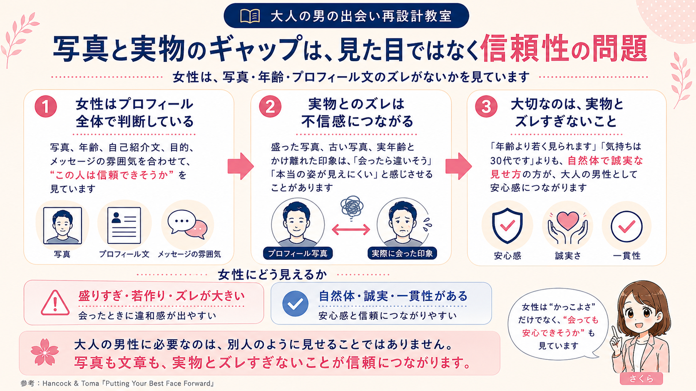
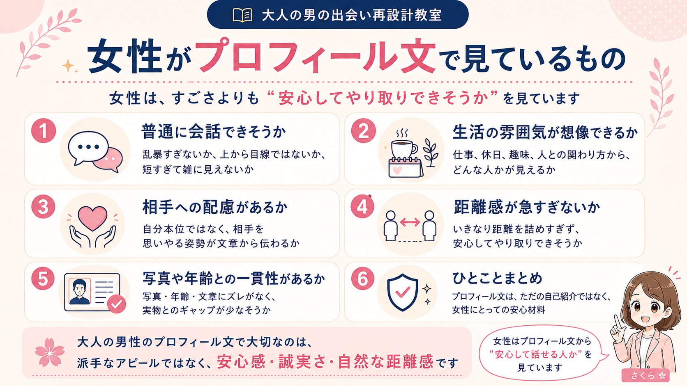
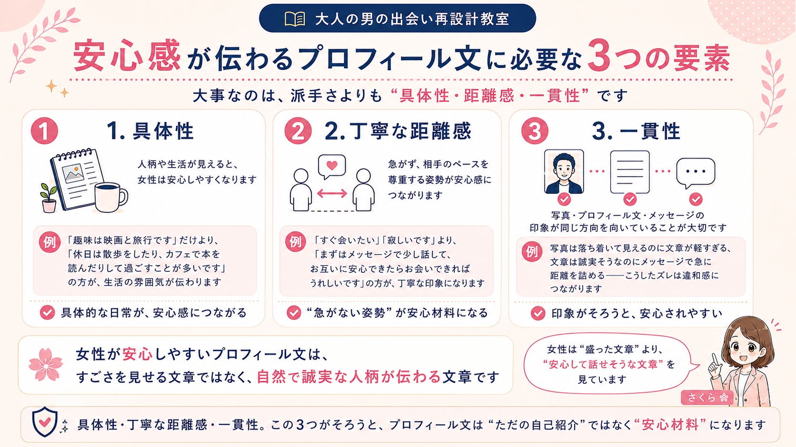
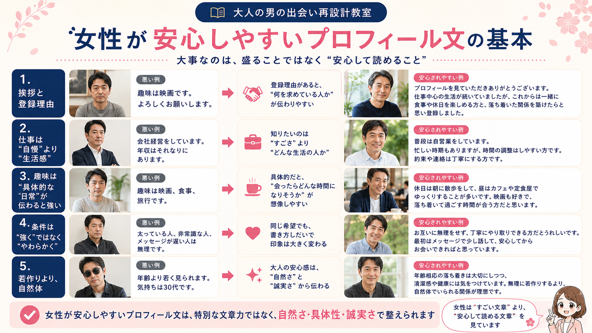
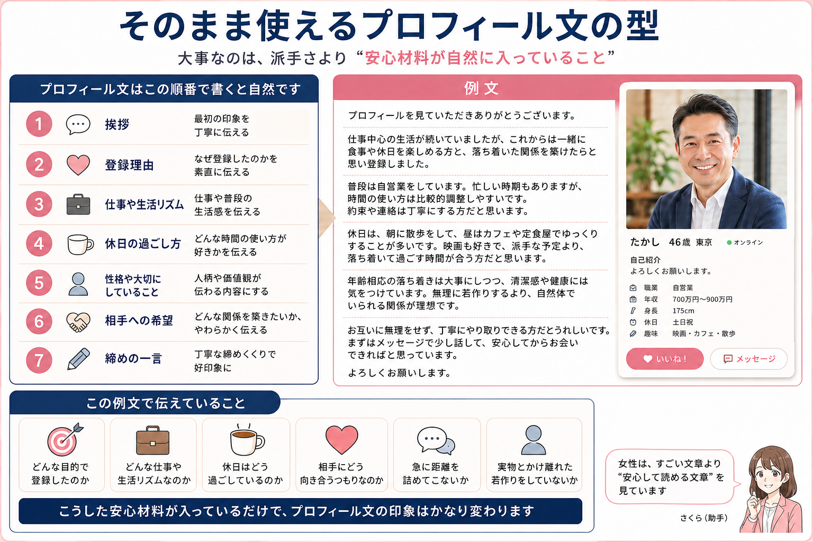
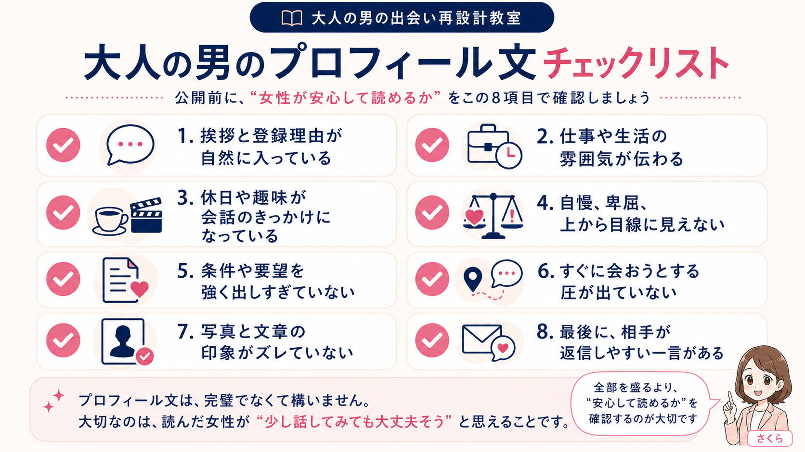

プロフィール改善
女性が安心する大人の男のプロフィール文とは
40代・50代男性のプロフィール文は、盛る場所ではありません。女性が見ているのは、すごさよりも「この人なら安心してやり取りできそうか」。調査や研究をもとに、誠実さ・人柄・距離感が伝わる書き方へ整えていきましょう。


導入｜プロフィール文は、盛る場所ではなく安心してもらう場所
先生、プロフィール文って何を書けばいいんですかね。
真面目に書くと堅いし、軽く書くと薄っぺらいし、自慢っぽくなるのも嫌なんです。
プロフィール文は、自分を大きく見せる場所ではありません。
女性に「この人なら普通に会話できそう」「急に距離を詰めてこなさそう」「人柄が伝わる」と思ってもらうための場所です。
先生
 さくら
さくら
女性側は、プロフィール文から「安心してやり取りできる人か」をかなり見ています。
すごい経歴よりも、落ち着いた言葉づかいや、相手への配慮が伝わる文章の方が安心しやすいです。
なぜ女性はプロフィール文で「安心感」を見ているのか
先生、女性がプロフィール文で安心感を見るって、単なる好みの問題なんですか？
男性側としては、ちゃんと自己紹介を書けばいいのかなと思っていました。
好みだけの問題ではありません。
マッチングアプリでは、知らない男性とやり取りし、場合によっては実際に会うことになります。だから女性側には、プロフィールを見る段階から「この人は安全そうか」「不快なやり取りをしてこなさそうか」を判断する合理的な理由があります。
先生
 さくら
さくら
Pew Research Centerの2023年調査でも、オンラインデート利用経験者の約半数が迷惑行為を経験していると報告されています。
特に50歳未満の女性では、望まない性的メッセージや画像、断った後のしつこい連絡、侮辱的な呼び方、身体的脅迫などの経験が報告されています。
つまり女性は、プロフィール文を読みながら、あなたのすごさだけを見ているわけではありません。
「この人は怖くなさそうか」「断ったときにしつこくならなさそうか」「普通に会話できそうか」も見ています。
だからこそ、大人の男性のプロフィール文で大切なのは、押しの強さではなく、相手の不安を減らす具体性と誠実さです。
先生
参考：Pew Research Center「The Experiences of U.S. Online Daters」
女性がプロフィールで見ているものは「魅力」だけではない
男性はプロフィールを見るとき、写真や年齢、趣味など、わかりやすい項目に意識が向きがちです。
しかし女性は、プロフィール全体からもっと細かい手がかりを読んでいます。
| 見ているもの | 表面的な意味 | 本当の判断ポイント |
|---|---|---|
| 写真 | 顔・清潔感・雰囲気 | 実物とズレなさそうか、会って怖くなさそうか |
| 自己紹介文 | 趣味・仕事・休日 | 生活が想像できるか、会話できそうか |
| 目的 | 恋活・婚活・友達探し | 何を求めている人か分かるか |
| 言葉づかい | 丁寧さ・文章量 | 急に距離を詰めてこなさそうか |
| NG要素 | 自慢・愚痴・上から目線 | 会った後に面倒くさくなさそうか |
女性はプロフィール文の「小さな手がかり」を見ています
写真や年齢だけじゃなくて、プロフィール文の細かい書き方まで見られているんですね。
そこまで読まれているとは、正直あまり考えていませんでした。
さくら
はい。オンラインデートに関するEllisonらの研究でも、利用者は限られた情報の中から、小さな手がかりを読み取って相手の信頼性を判断しようとすると示されています。
しかも、自分をよく見せたい気持ちと、実際に会ったときに違和感が出ないよう正確に見せたい気持ちの間で、みんなバランスを取っているんです。
さくら
だから女性は、プロフィール文を国語の答案みたいに採点しているわけではありません。
ただ、短い文章の中から「誠実そうか」「自分本位ではなさそうか」「普通にメッセージできそうか」を感じ取っています。
言葉づかい、具体性、登録目的の明確さは、まさにそうした“小さな手がかり”なんです。
写真と実物のギャップは、見た目ではなく信頼性の問題

プロフィール文の話をする前に、写真との関係も押さえておく必要があります。
女性はプロフィール文だけを単体で見ているわけではありません。写真、年齢、自己紹介文、目的、メッセージの雰囲気を合わせて、「この人は信頼できそうか」を判断しています。
Hancock & Tomaのオンラインデート写真に関する研究では、本人が比較的正確だと思っている写真でも、第三者から見ると正確ではないと判断されるケースがあることが示されています。
これは写真だけの話ではありません。プロフィール文でも同じです。
「年齢より若く見られます」「気持ちは30代です」「実年齢よりかなり若いと思います」といった表現は、本人としては前向きなアピールのつもりかもしれません。しかし女性側から見ると、「盛っていそう」「実際に会ったらギャップがありそう」と感じられることがあります。
大人の男性に必要なのは、別人のように見せることではありません。写真も文章も、実物とズレすぎないことが信頼につながります。
プロフィール文だけを丁寧にしても、写真や清潔感の印象とズレていると、女性は違和感を持つことがあります。髪・ヒゲ・服装・肌・ニオイ・生活感など、清潔感で損しやすいポイントは、清潔感がないと思われる中年男性の共通点の記事でも詳しく整理しています。
女性がプロフィール文で見ているもの

女性がプロフィール文で見ているのは、主に次の5つです。
- 普通に会話できそうか
- 生活の雰囲気が想像できるか
- 相手への配慮があるか
- 距離感が急すぎないか
- 写真や年齢との一貫性があるか
この5つが整っていると、プロフィール文はただの自己紹介ではなく、安心材料になります。
安心して会話できそうか
プロフィール文が乱暴だったり、上から目線だったり、極端に短かったりすると、女性は不安になります。
「よろしく」だけ。「使い方わかりません」だけ。「まずは会いましょう」だけ。こうした文章は、悪気がなくても雑に見えます。
逆に、短くても丁寧で、普通に会話できそうな雰囲気があれば、女性は読み進めやすくなります。
生活感が整っていそうか
プロフィール文には、その人の暮らし方がにじみます。
仕事のこと。休日の過ごし方。食事や散歩、映画、カフェなどの小さな習慣。人との関わり方。こうした情報から、女性は「この人と会ったらどんな時間になりそうか」を想像します。
高級な趣味を書く必要はありません。むしろ、自然で無理のない日常が伝わる方が安心感につながります。
相手への配慮があるか
プロフィール文では、自分の希望だけでなく、相手への配慮が伝わるかも見られています。
「こういう人は無理です」「返信が遅い人は合いません」のように条件を強く並べると、読む側は少し身構えてしまいます。
一方で、「お互いに無理なく、丁寧にやり取りできたらうれしいです」と書くと、自分本位ではなく、相手のペースも大切にできる人だと伝わりやすくなります。
距離感が急すぎないか
プロフィール文でいきなり距離を詰めすぎると、警戒されやすくなります。
「甘えたいです」「癒してくれる人がいいです」「すぐ会える人がいいです」「寂しいので登録しました」。こうした表現は、読む人によっては重く感じられます。
大人の男性ほど、焦りを見せすぎず、相手のペースを尊重する雰囲気が大切です。
写真や年齢との一貫性があるか
女性は、プロフィール文だけを単体で見ているわけではありません。写真、年齢、文章、メッセージの雰囲気がつながっているかも見ています。
写真では落ち着いて見えるのに文章が軽すぎる。年齢は50代なのに「気持ちは30代」と若さばかりを強調している。こうしたズレがあると、実際に会ったときのギャップを想像されやすくなります。
大切なのは、若く見せることではなく、写真と文章から伝わる印象が自然にそろっていることです。一貫性があるプロフィールは、女性にとって安心材料になります。
40代・50代男性がプロフィール文で損するNG例
プロフィール文で損している人は、内容そのものが悪いというより、伝わり方で損していることが多いです。
自分では普通に書いているつもりでも、女性側から見ると不安や違和感につながる表現があります。
NG例1｜短すぎて人柄が見えない
「よろしくお願いします」「使い方がよくわかりません」「いい人がいれば」だけでは、女性は判断材料を持てません。
長文にする必要はありません。ただ、仕事、休日、性格、どんな関係を望んでいるかは、最低限伝えたいところです。
プロフィール文が短すぎると、女性は「本気度が低そう」「会話が続かなさそう」と感じることがあります。
NG例2｜自慢や武勇伝が多い
収入、肩書き、過去のモテ話、仕事の成果ばかりを書くと、すごさよりも圧が伝わります。
「会社経営をしています」「年収はそれなりにあります」「昔はよくモテました」「年齢より若く見られます」。これらは、書き方によっては逆効果になります。
大切なのは「俺はすごい」と思わせることではありません。「この人と話すと落ち着きそう」と感じてもらうことです。
NG例3｜卑屈さや諦めがにじんでいる
謙虚に見せようとして、自分を下げすぎる人もいます。
「もう若くないですが」「こんなおじさんでよければ」「どうせマッチしないと思いますが」「女性慣れしていません」。こうした表現は、読む側を困らせます。
謙虚さと卑屈さは違います。年齢を下げる必要はありませんが、自分を必要以上に下げる必要もありません。
NG例4｜条件や要望が先に出すぎている
プロフィール文で最初から条件を並べすぎると、厳しい印象になります。
「太っている人は無理」「非常識な人は無理」「返信が遅い人は無理」「会う気がない人はいいねしないでください」。もちろん、大切な条件はあると思います。
ただ、プロフィール文の最初から相手を選別するように見えると、安心感は下がります。
NG例5｜すぐに会いたい雰囲気が強すぎる
「メッセージより会った方が早いです」「まずは会いましょう」「すぐ会える人がいいです」。男性側としては、効率よく進めたいだけかもしれません。
しかし女性側から見ると、急かされているように感じることがあります。だからこそ、「急がない」「まずは安心してやり取りしたい」という姿勢は、プロフィール文でも大事な安心材料になります。
女性目線では、プロフィール文のここで安心感が変わる
自分を良く見せようとすると自慢っぽくなるし、控えめにすると弱く見える気がします。
どのくらい書けばいいんでしょうか。
さくら
女性側は、完璧な文章を求めているわけではありません。
ただ、読む中で「会話が一方的ではなさそう」「清潔感がありそう」「普通に約束を守れそう」と感じられると安心しやすいです。
プロフィール文は、スペックの一覧表ではなく、安心材料を積み重ねる文章です。
仕事、休日、人柄、相手への姿勢を、短く自然につなげるだけでも印象はかなり変わります。
先生
安心感が伝わるプロフィール文に必要な3つの要素

女性が安心しやすいプロフィール文には、共通する要素があります。
それは、具体性、丁寧な距離感、一貫性です。
1. 具体性
「趣味は映画と旅行です」だけでは、人柄や生活が見えにくいです。
一方で、「休日は散歩をしたり、カフェで本を読んだりして過ごすことが多いです」と書くと、生活の雰囲気が伝わります。
プロフィール文では、派手な趣味よりも、具体的な日常の方が安心感につながることがあります。
2. 丁寧な距離感
プロフィール文には、距離感が出ます。
「すぐ会いたい」「寂しいです」「癒してほしいです」という文章は、相手によっては重く感じます。
一方で、「まずはメッセージで少し話して、お互いに安心できたらお会いできればうれしいです」と書くと、相手のペースを尊重していることが伝わります。
これは単なる優しさアピールではありません。女性にとっては、安全感につながるサインです。
3. 一貫性
プロフィール文は、写真やメッセージとつながって見られます。
写真では落ち着いて見えるのに、文章が軽すぎる。文章では誠実そうなのに、メッセージで急に距離を詰める。写真では清潔感があるのに、プロフィール文が雑。
こうしたズレがあると、女性は違和感を持ちます。大切なのは、写真、プロフィール文、メッセージの印象が同じ方向を向いていることです。
女性が安心しやすいプロフィール文の基本

女性が安心しやすいプロフィール文は、特別な文章力があるから書けるものではありません。
順番と見せ方を整えれば、誰でもかなり読みやすくできます。
最初に、丁寧な挨拶と登録理由を書く
いきなり趣味や条件に入るよりも、まずは自然な挨拶から始める方が読みやすくなります。
たとえば、「プロフィールを見ていただきありがとうございます。仕事中心の生活が続いていましたが、これからは一緒に食事や休日を楽しめる方と、落ち着いた関係を築けたらと思い登録しました。」このくらいで十分です。
登録理由があると、女性は「何を求めている人か」を理解しやすくなります。
仕事は詳しすぎず、生活感が伝わる程度に書く
職種や働き方は、信頼感につながる情報です。ただし、仕事の自慢になりすぎると読みにくくなります。
悪い例としては、「会社経営をしています。年収はそれなりにあります。」これだけだと、すごさは伝わるかもしれませんが、生活の雰囲気や人柄は見えにくいです。
安心されやすい例は、「普段は自営業をしています。忙しい時期もありますが、時間の使い方は比較的調整しやすいです。約束や連絡は丁寧にする方です。」です。
女性が知りたいのは、「すごい人か」だけではありません。付き合ったらどんな生活リズムの人なのか。約束や連絡を大切にできそうか。そうした部分です。
休日や趣味は、相手が会話しやすいものを入れる
趣味は珍しさよりも、会話のきっかけになることが大切です。
「趣味は映画、食事、旅行です」でも悪くはありません。ただ、これだけだと少しぼんやりしています。
「休日は、朝に散歩をして、昼はカフェや定食屋でゆっくりすることが多いです。映画も好きで、派手な予定より、落ち着いて過ごす時間が合う方だと思います。」と書くと、女性は「この人と会ったらどういう時間になりそうか」を想像できます。
相手への希望は柔らかく書く
相手への希望を書くこと自体は悪くありません。ただし、書き方が強すぎると印象が悪くなります。
「太っている人、非常識な人、メッセージが遅い人は無理です。」という書き方は、読む側に緊張感を与えます。
「お互いに無理をせず、丁寧にやり取りできる方だとうれしいです。最初はメッセージで少し話して、安心してからお会いできればと思っています。」と書くと、同じ希望でもかなりやわらかく伝わります。
盛らない・若作りしない
40代・50代男性がやってしまいがちなのが、若さのアピールです。
「年齢より若く見られます。気持ちは30代です。」という表現は、本人としては前向きに見せたいだけかもしれません。しかし、女性側から見ると「若作りしていそう」「実物とのギャップがありそう」と感じられる可能性があります。
「年齢相応の落ち着きは大事にしつつ、清潔感や健康には気をつけています。無理に若作りするより、自然体でいられる関係が理想です。」の方が、大人の男性らしい安心感につながります。
Profile Redesign

プロフィール文だけでなく、全体の印象を見直したい方へ
プロフィール文を整えると、写真やメッセージの印象もつながりやすくなります。ただ、自分ではどこが違和感になっているか気づきにくいものです。
写真・文章・メッセージの流れを一度まとめて確認したい方は、プロフィール再設計相談のページも参考にしてみてください。
プロフィール再設計相談を見るそのまま使えるプロフィール文の型

ここまでを踏まえると、40代・50代男性のプロフィール文は、次の順番で書くと自然です。
- 挨拶
- 登録理由
- 仕事や生活リズム
- 休日の過ごし方
- 性格や大切にしていること
- 相手への希望
- 締めの一言
例文
プロフィールを見ていただきありがとうございます。
仕事中心の生活が続いていましたが、これからは一緒に食事や休日を楽しめる方と、落ち着いた関係を築けたらと思い登録しました。
普段は自営業をしています。忙しい時期もありますが、時間の使い方は比較的調整しやすいです。約束や連絡は丁寧にする方だと思います。
休日は、朝に散歩をして、昼はカフェや定食屋でゆっくりすることが多いです。映画も好きで、派手な予定より、落ち着いて過ごす時間が合う方だと思います。
年齢相応の落ち着きは大事にしつつ、清潔感や健康には気をつけています。無理に若作りするより、自然体でいられる関係が理想です。
お互いに無理をせず、丁寧にやり取りできる方だとうれしいです。まずはメッセージで少し話して、安心してからお会いできればと思っています。
よろしくお願いします。
この例文で伝えていること
この文章は、派手ではありません。強烈な個性もありません。
でも、女性が知りたい情報が自然に入っています。どんな目的で登録したのか。どんな仕事や生活リズムなのか。休日はどう過ごしているのか。相手にどう向き合うつもりなのか。急に距離を詰めてこないか。実物とかけ離れた若作りをしていないか。
こうした安心材料が入っているだけで、プロフィール文の印象はかなり変わります。
大人の男のプロフィール文チェックリスト

プロフィール文を書いたら、公開前に次の項目を確認してみてください。
- 挨拶と登録理由が自然に入っている
- 仕事や生活の雰囲気が伝わる
- 休日や趣味が会話のきっかけになっている
- 自慢、卑屈、上から目線に見えない
- 条件や要望を強く出しすぎていない
- すぐに会おうとする圧が出ていない
- 写真と文章の印象がズレていない
- 最後に、相手が返信しやすい一言がある
プロフィール文は、完璧でなくて構いません。大切なのは、読んだ女性が「少し話してみても大丈夫そう」と思えることです。
写真・プロフィール文・メッセージをつなげて整える理由
プロフィール文だけを整えても、写真やメッセージと印象がズレていると、女性は違和感を持ちます。
写真では清潔感があるのに、文章が雑。文章では誠実そうなのに、メッセージで急に距離を詰める。プロフィール文では落ち着いているのに、実際のやり取りで自分語りが長い。
こうしたズレがあると、せっかくの良さが伝わりにくくなります。
大切なのは、全体の一貫性です。写真、プロフィール文、メッセージ、会話、清潔感、服装、雰囲気。これらが同じ方向を向いていると、女性は安心しやすくなります。
若作りをする必要はありません。今の自分の良さが、女性に伝わる形になっているかを確認することが大切です。
写真・プロフィール文・メッセージをまとめて整えたい方へ
プロフィール文は、単体で考えるよりも、写真やメッセージとセットで見ることが大切です。
文章だけ良くしても、写真ややり取りの印象がズレていると、途中で離脱されることがあります。
 先生
先生
たしかに、自分では文章だけ直せばいいと思っていました。
でも、写真やメッセージまで合わせて見ないと、本当の原因はわからないんですね。
さくら
女性側から見ると、写真、文章、やり取りの印象がつながっていると安心しやすいです。
一つひとつを整えるより、全体の流れで見直す方が改善しやすいです。
「プロフィール文が女性にどう見えているか不安」「写真と文章の印象が合っているかわからない」「メッセージで毎回続かない」と感じる方は、写真・プロフィール文・メッセージをまとめて見直すのがおすすめです。
大人の男の出会い再設計教室では、若作りではなく、今の自分の魅力が女性に伝わるように、見せ方を整えるサポートを行います。
まとめ｜プロフィール文は、若く見せるより安心感を伝える
大人の男性のプロフィール文は、女性を口説く文章ではありません。
女性が安心して「この人なら少し話してみてもいいかも」と思えるように、不安を減らす文章です。
仕事、休日、登録目的、価値観、会うまでの距離感を具体的に書く。それだけで、ただの自己紹介文は「安心材料」に変わります。
派手なアピールや若作りは必要ありません。年齢を隠す必要も、別人のように見せる必要もありません。
大切なのは、今の自分を、誠実に、具体的に、相手に伝わる形に整えることです。
プロフィール文を整えることは、自分を偽ることではありません。今の自分の良さを、女性に安心して受け取ってもらえる形にすることです。
大人の男の出会いは、盛ることではなく、安心して読める見せ方から始まります。